四国の鉄道黎明期を映す、フランドル積み煉瓦橋脚 < 中津川橋りょう / 香川県丸亀市 >
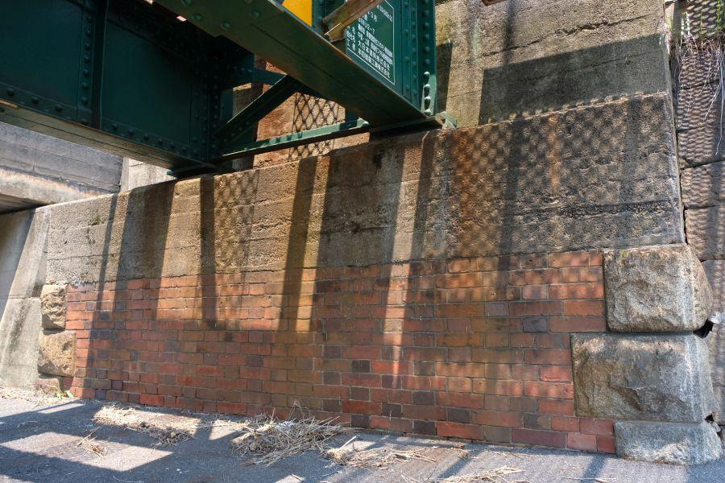
明治・文明開化を迎えた日本では、(主に)イギリス人技術者に師事を受けて全国に鉄道が敷設されていきます。
四国にもその波はやってきて、
明治21年(1888)10月
伊予鉄道・松山(現松山市駅)－三津 開業 →現伊予鉄道高浜線の一部
明治22年(1889)5月
讃岐鉄道・丸亀－多度津－琴平 開業 →現JR予讃線・土讃線の一部
各エリアの有力者たちの手によって、鉄道が各地に広がって行きました。
その後 地域の発展や鉄道の高速化による路盤改良、香川県の場合は 瀬戸大橋との接続によって古い鉄道施設の多くが姿を消しましたが、一部では開業時のものが 今も現役で活躍しています。
四国の鉄道先駆者・讃岐鉄道の遺構
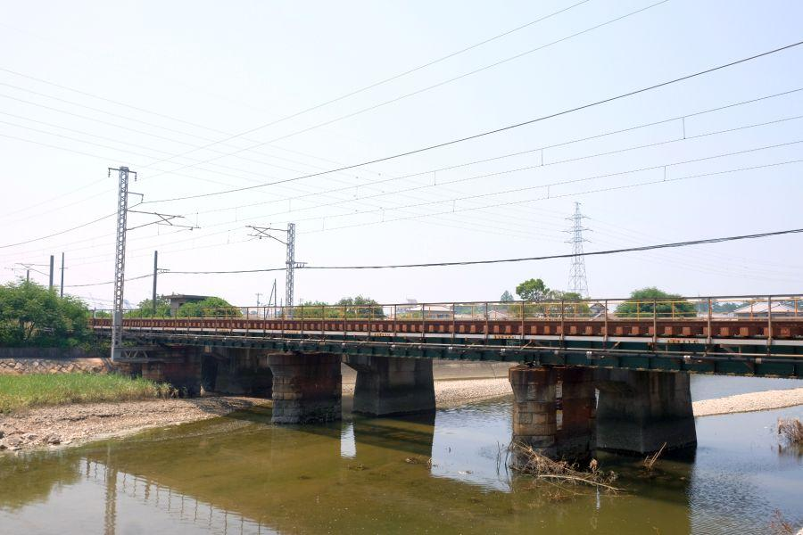
中津川橋りょう(なかつがわきょうりょう / 香川県丸亀市)
※ 橋梁の梁(りょう)の字が常用漢字外のため、固有名詞としては平仮名で表記される
丸亀市西部、金倉川に架かる鉄道橋。
四国で二番目に敷設された、讃岐鉄道の初代開業区間に当たります。
ご覧の通り、
下り線(手前)
と
上り線(奥)
では、橋脚の構造が異なります。
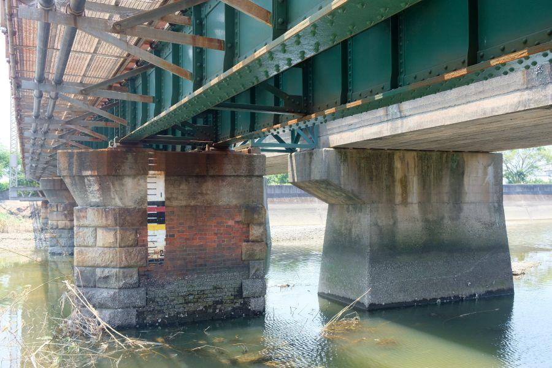
下り線は煉瓦と石積み、上り線はコンクリート。
前者が初期構造物(明治22年/1889)
後者が複線化の際に新たに建造された 後年のもの(昭和41年/1966)
橋脚の下部3分の1が白化しているように見えますが、この場所が潮の干満の影響を受けるため。この高さまで潮が満ちると言うことですね。
数少ない煉瓦フランドル積み橋脚
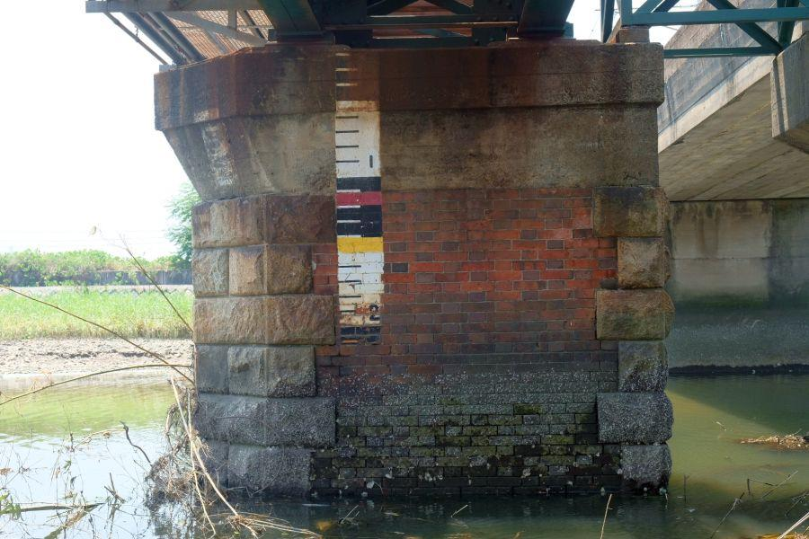
この橋脚で特筆される点は、レンガの組み方が "フランドル積み" である事。
フランドル積みは、
小口長手小口長手...
長手小口長手小口...
と異なる向きの煉瓦を 同段に組む工法。公式的に日本へ最初に入ってきた煉瓦工法ながら、
小口小口小口小口...
長手長手長手長手...
と組むイギリス積みが伝えられると、そちらが主流になり 大きな建造物にはフランドル積みが見られなくなっていった。
今日 全国で見られる港湾の煉瓦倉庫群など、その殆どがイギリス積みです。
国内でフランドル積みが衰退した理由は、
関東大震災の際に 倒壊した煉瓦建造物が多かったことから、一般的には「強度に劣る」烙印を押されたことが理由とされていますが、フランドル積みは 日本に先に入ってきた工法であり古い建物が多かった。イギリス積みより 煉瓦の個数が必要なため、等が真相のようです。
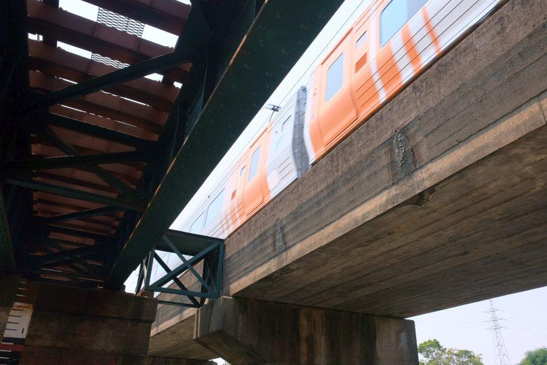
上り線を特急しおかぜが駆け抜けて行きました。
鉄橋と異なり騒音が明らかに違います。構造はもちろん 建造年だけ見ても 77年の開きがあるので、技術の進歩を この位置から確かに感じることができます。
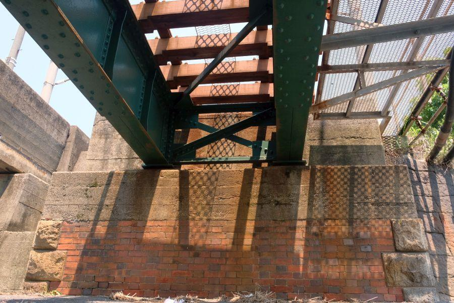
両方の橋台も もちろんフランドル積み。
個人的にはイギリス積みより模様が美しく出る気がします。
後年 複線化が行われた際に、新しく造られた上り線と同じ高さになるようにコンクリートで嵩増しが行われています。
上下それぞれ独立した築堤を築くよりも、上下線並列の築堤とした方がメリットがあるというのが理由でしょう。
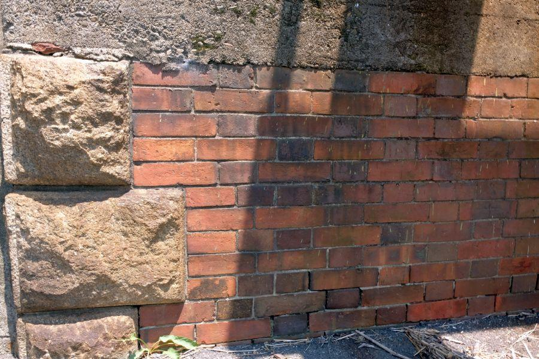
フランドル積みは、資料によっては「フランス積み」と称されることがあるが、厳密には誤り。
発祥となった "フランドル地方" は、オランダ南部・ベルギー西部・フランス北部に跨るエリアであり、必ずしもフランス領ではない。
Flandre(フランドル・フランス語)
Flandern(フランデーレン・オランダ語)
Flandern(フランダーン・ドイツ語)
Flanders(フランダース・英語)
日本では「フランダースの犬」の物語舞台として有名。
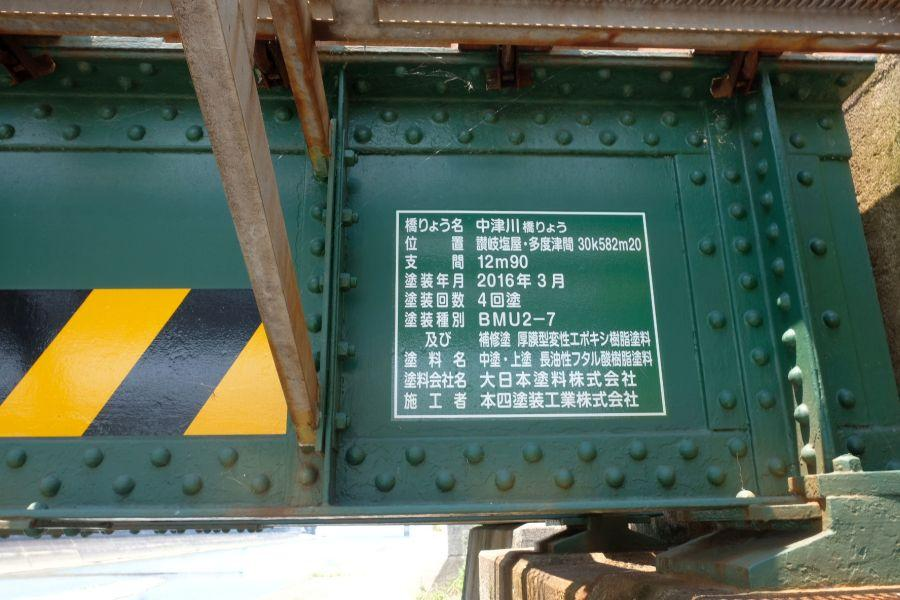
鋼鉄のプレートガーダー(橋桁)は開業当初のものではなく、昭和3年(1928)製。
鉄道の標準橋梁として、全国に広く配備されました。
錆による劣化を防ぐため、現在に至るまで 何度も錆止め塗装が行われ、保全されています。
近くにもある讃岐鉄道の遺構・フランドル積み橋台
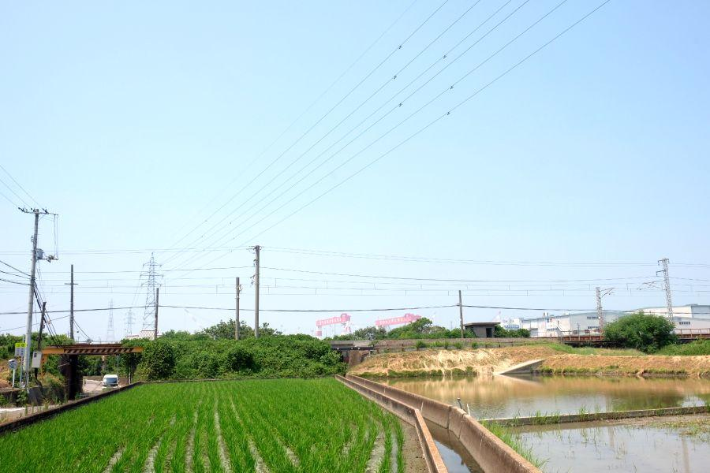
中津川橋りょう付近の風景
東側(右)に 中津川橋りょう、
西側(左)に 自動車が通行できるアンダーガード。
後者は後年開削されたもので、橋台はコンクリート造りとなっています。
よーく見ると、それらの橋の真ん中に 築堤が開削された部分を見ることができます。そこへ向かって水路が伸びているので 用水路が線路をくぐって反対側へ農業用水がもたらされているのだと思いますが、ピンときたのはそこではありません。
近付いてみると...
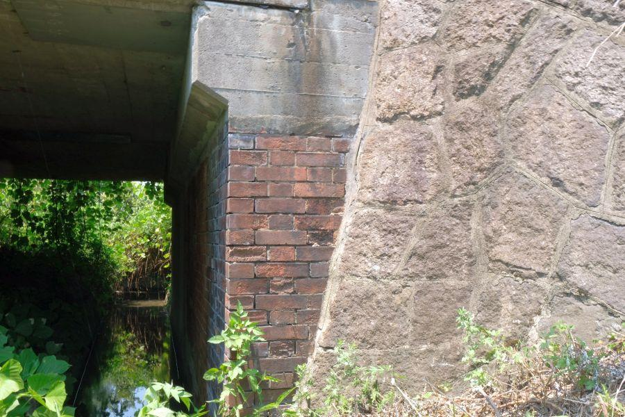
やっぱり！！
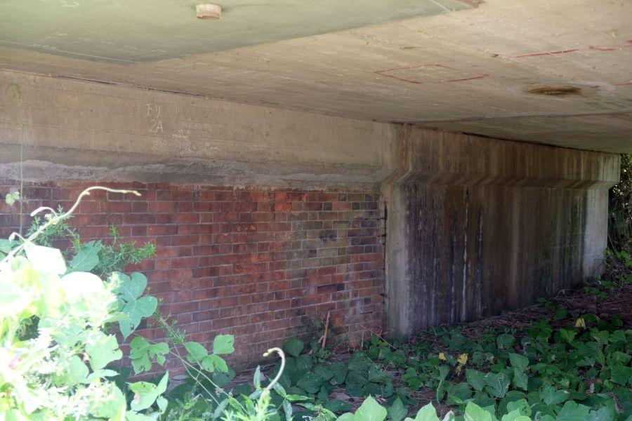
煉瓦橋台、それもフランドル積み。勘を頼りに進んだところで 大発見でした。
讃岐鉄道が敷設された時代には 既に後年の主流となるイギリス積みが日本に入ってきており、これらの橋脚・橋台が 何故フランドル積みで造られたか、考察してみることにします。
☆ 香川に伝わっていた技術がフランドル積みだけだった？
単純に他の工法が伝わっておらず、既存の技術で建造された？
裏付ける材料としては、讃岐鉄道起工当時(明治20年/1887)は香川県は存在しておらず、愛媛県の一部。公共事業・インフラ整備等は現愛媛県域優先で行われていた。
そのため現香川県県域は 最新のものが入って来にくい環境だったのではないか(明治21年12月、現香川県発足)。
当時の事を想像するに、技術(工法)を選択する余地はなかったように思います。
故にコストダウンのしようもありません。持てる財力と技術・知識 これら全てを注いで造られたものと想像します。
これらの煉瓦橋の上を運行する鉄道が 長い年月の中で運んだ人や物は数知れず。
四国の発展や近代化に大きく寄与した鉄道。その運行を支えるこれらの橋台は、竣工から実に130年もの時が経っていますが、 一部は現役です。
中津川橋りょう
< 自家用車 >
高松駅から 約50分、38km
高知龍馬空港から 約50分、35km
< 列車 >
讃岐塩屋駅下車 徒歩約8分、650m
※ 主な地点からの最速・最短距離